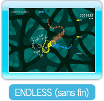
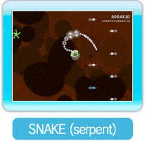

● Qu’est-ce que Rotozoa?
Contrôlez votre rotozoan et nagez dans de la vase primitive grâce à Art Style: Rotozoa. Absorbez des ennemis goobugs afin de faire pousser vos tentacules.
・Modes
Trois modes de jeu sont disponibles.
Faites pousser les tentacules de votre rotozoan jusqu’à une certaine longueur dans chaque niveau.

Faites pousser vos tentacules aussi long que possible afin d’obtenir le meilleur pointage.

Obtenez le meilleur pointage possible en faisant pousser un seul des tentacules de votre rotozoan aussi long que possible.
Pour sauvegarder
Ce jeu sauvegarde automatiquement votre progression lorsque vous terminez un niveau, lorsque la partie se termine, ou lorsque vous effectuez des changements dans le menu OPTIONS. « Saving... » (sauvegarde en cours) apparaît sur l’écran lors du processus de sauvegarde.
Pour effacer des données sauvegardées, veuillez vous référer au mode d’emploi de la Wii. Faites attention, les données de sauvegarde effacées ne pourront pas être récupérées.
Note : Une seule partie peut être sauvegardée à la fois.
Attention :
Effectuer l’une des actions ci-dessous pourrait empêcher la sauvegarde de vos données ou provoquer la perte des données. Les données ne pourront pas être récupérées, alors faites attention!
Éteindre ou réinitialiser la console Wii ou la manette Wii Remote pendant la sauvegarde des données.